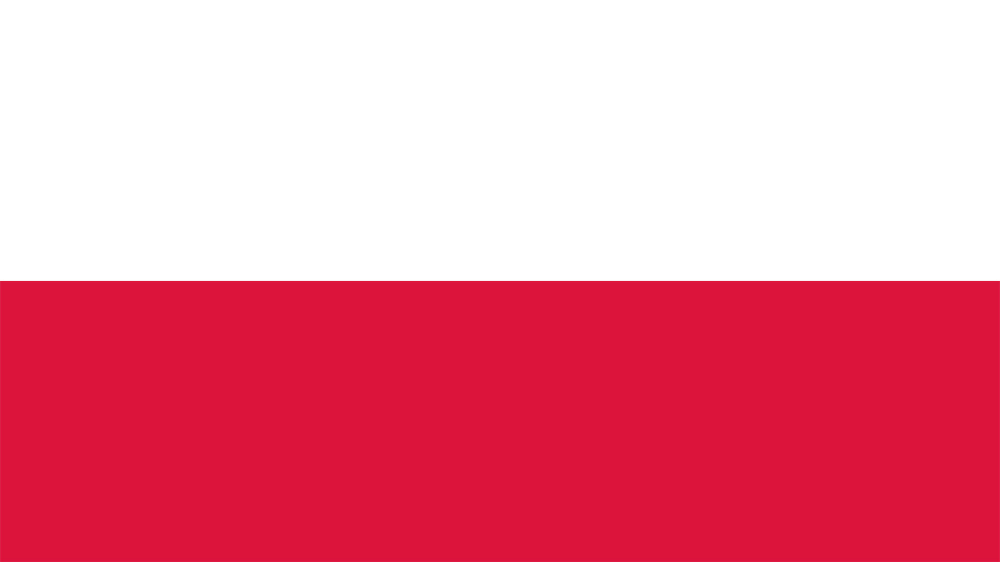

Poland
| Number |
Name |
Club |
Birthdate |
| Goalkeeper |
| 12 |
Bartosz Białkowski |
Ipswich Town |
06.07.1987 |
| 22 |
Łukasz Fabiański |
Swansea City |
18.04.1985 |
| 1 |
Wojciech Szczęsny |
Juventus |
18.04.1990 |
| Defender |
| 5 |
Jan Bednarek |
Southampton FC |
12.04.1996 |
| 18 |
Bartosz Bereszyński |
Sampdoria |
12.07.1992 |
| 4 |
Thiago Cionek |
SPAL 2013 Ferrara |
21.04.1986 |
| 15 |
Kamil Glik |
AS Monaco |
03.02.1988 |
| 3 |
Artur Jędrzejczyk |
Legia Warszawa |
Legia Warszawa |
| 2 |
Michał Pazdan |
Legia Warszawa |
21.09.1987 |
| 20 |
Łukasz Piszczek |
Borussia Dortmund |
03.06.1985 |
| Midfielder |
| 16 |
Jakub Błaszczykowski |
VfL Wolfsburg |
14.12.1985 |
| 6 |
Jacek Góralski |
PFC Ludogorets Razgrad |
21.09.1992 |
| 10 |
Grzegorz Krychowiak |
West Bromwich Albion |
29.01.1990 |
| 8 |
Karol Linetty |
Sampdoria |
02.02.1995 |
| 17 |
Sławomir Peszko |
Lechia Gdańsk |
19.02.1985 |
| 13 |
Maciej Rybus |
Lokomotiv Moskva |
19.08.1989 |
| 19 |
Piotr Zieliński |
SSC Napoli |
20.05.1994 |
| Forward |
| 11 |
Kamil Grosicki |
Hull City |
08.06.1988 |
| 23 |
Dawid Kownacki |
Sampdoria |
14.03.1997 |
| 21 |
Rafał Kurzawa |
Górnik Zabrze |
29.01.1993 |
| 9 |
Robert Lewandowski |
Bayern München |
21.08.1988 |
| 7 |
Arkadiusz Milik |
SSC Napoli |
28.02.1994 |
| 14 |
Łukasz Teodorczyk |
RSC Anderlecht |
03.06.1991 |
| Manager |
|
Adam Nawałka |
|
23.10.1957 |